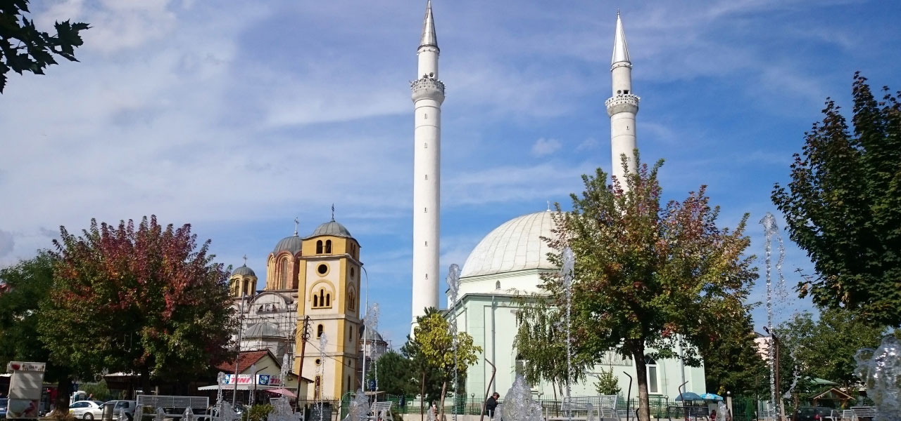

Mirë se vini në Ferizaj
Ferizaj, i njohur për bashkëjetesën unike fetare ku një kishë dhe një xhami ndodhen krah për krah, është qytet modern në zhvillim të vrullshëm. Vendndodhja e tij strategjike në juglindje të Kosovës e bën qendër të rëndësishme ekonomike, kulturore dhe turistike.
Çfarë të shihni në Ferizaj
- Kisha dhe Xhamia Bashkë: Simbol i tolerancës dhe harmonisë ndërfetare.
- Muzeu i Qytetit: Përmban eksponate nga historia, kultura dhe arti lokal.
- Parku i Pashtrikut: Një zonë e qetë për shëtitje dhe çlodhje në natyrë.
- Qendra Tregtare "The Village" për blerje moderne dhe argëtim.
Kultura dhe Jeta Lokale
Në Ferizaj gjeni festivale, aktivitete sportive, koncerte në natyrë dhe komunitete të përkushtuara ndaj artit dhe zhvillimit lokal. Është qytet me energji të re dhe vizion të qartë për të ardhmen.
